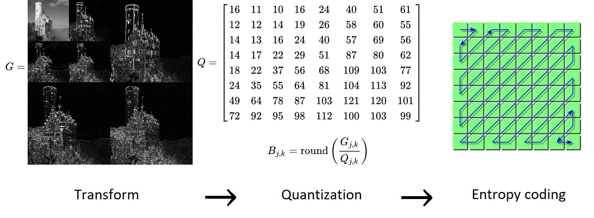
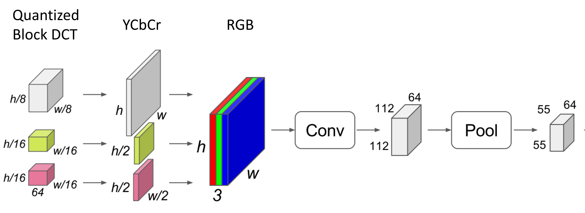
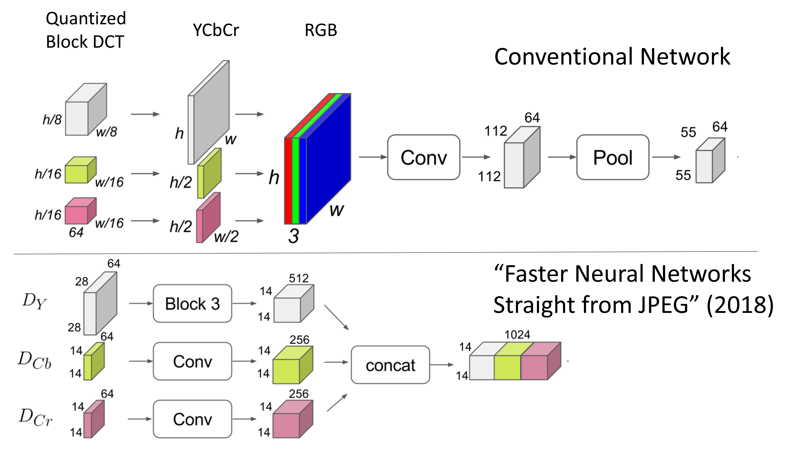

Transfer Learning from Lossy Codecs¶
Lossy compression¶
Most data are stored using lossy formats (MP3, JPEG)
1-4 bit subband quantization is typical
~1.5 bits per sample/pixel after entropy coding

Conventional Training Procedure¶
Still suffers from all of the downsides of lossy compression
Don’t get any of the benefits of smaller representation!

Neural compression standards¶
Soundstream (Google, 2021) and Encodec (Meta, 2022)
Fully trained models available to download and use
encodec [-b TARGET_BANDWIDTH] [-f] [--hq] [--lm] INPUT_FILE [OUTPUT_FILE]

Training on transformed data¶
Reduce size and number of initial convolutional layers by training on subband coefficients
Input size remains the same (Quantization of transform coefficients ignored)
Training on transformed data¶

Training on quantized data¶
Each transform coefficient only contains about 2 bits instead of 8
“Replace” each 2x2 block of 2-bit transform coefficients with a single high precision input
Size of input layer: \(112 \times 112 \times 3 \times 32\) bits per image
3 GB Feature memory (down from 13)
131 GFLOPs per pass (down from 497)
How do we “replace” several low-precision inputs with a single high precision input?
Conventional approach vs Neural codec transfer learning¶
Example dataset: Speech commands
Input size: \(128 \times 128\) time-frequency distribution represented at full precision
Compressed size: \(2 \times 75 \times 10\) binary codes
Size reduction of over 300 \(\times\) with very small loss in speech intelligibility
Training on quantized data or discrete codes¶
Ideally, we could just “replace” several low-precision inputs with a single high precision input
Naive approach: \(y = (x_1) + (x_2 << 2) + (x_3 << 4) + (x_4 << 6)\)
Amounts to creating a categorical variable
Standard approach to training on categorical variable is to one-hot encode
Open questions and project goals¶
What is the best way to train on quantized data?
Binary neural networks
Exploit sparsity (feature hashing)
Others?
How do current neural codecs perform on out of distribution data?
Test performance of encodec (trained on speech and music) on other types of audio signals
How effective is this type of transfer learning
Reduction in data collection?
Reduction in computation?